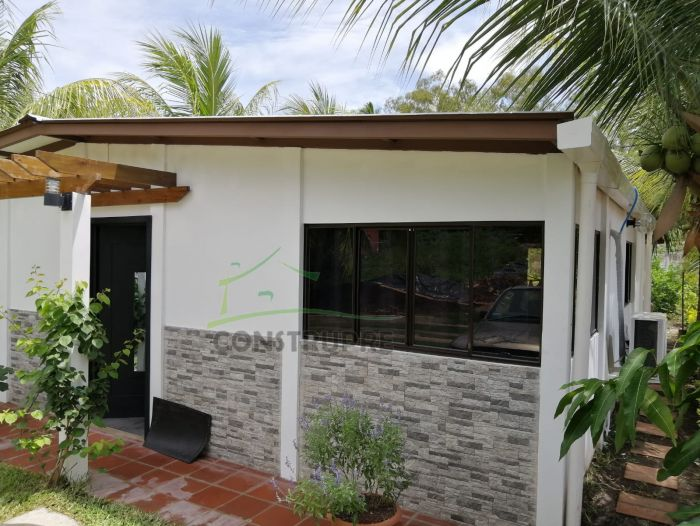

Casas con acabados

Galería
Imágenes del proyecto
Seleccione una imagen para ampliarla.
Características documentadas
Información del proyecto
- Área de construcción 102.00m2:
- Paredes prefabricadas repelladas y pintadas ambas caras
- Columnas prefabricadas repelladas y pintadas para p?rgola
- Pergola de 1.50m2 de madera de pino importado, tratado, sellado y barnizado
- Pergola de 17.50m2 de madera de pino importado, tratado, sellado y barnizado
- Techo estructura metalica color cafe, fibrolit visto y cubierta de lamina con recubrimiento de zinc
- Piso cerámico con zócalo
- Ventanas de aluminio y vidrio bronce tipo panoramicas
- Puertas de madera sólida
- Puertas simulando madera tipo americanas
- Barras desayunadoras enchapadas
- Lavatrastos de doble poceta sobre barra enchapada
- Pila prefabricada de un lavadero
- Servicios sanitarios completos enchapados en duchas
- Instalaciones eléctricas a nivel de mecha
- Instalaciones hidráulicas a nivel de mecha (incluye 3 tomas a 220v)
Más proyectos